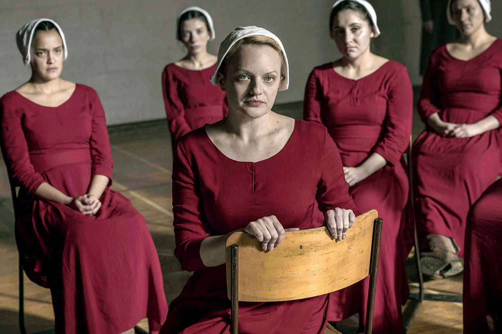

- Outlander
- Temporadas: 6
- Disponível na Netflix
- Elenco: Claire Fraser, Jamie Fraser, Jonathan Randall

- The Handmands Tale
- Temporadas: 5
- Indisponível na Netflix
- Elenco: June Osborne, Serena Joy, Comandante 
- Greys Anatomy
- Temporadas: 19
- Indisponível na Netflix
- Elenco: Meredith Grey, Derek Shepherd, Cristina Yang